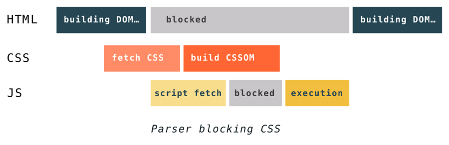
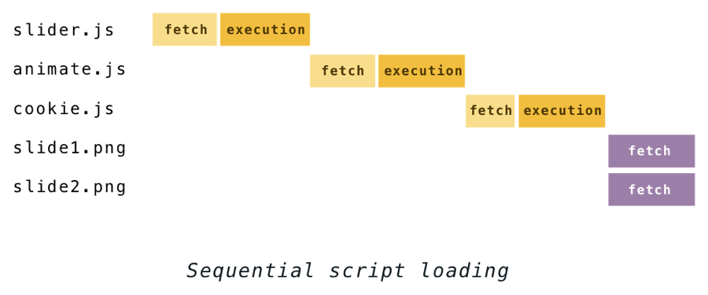
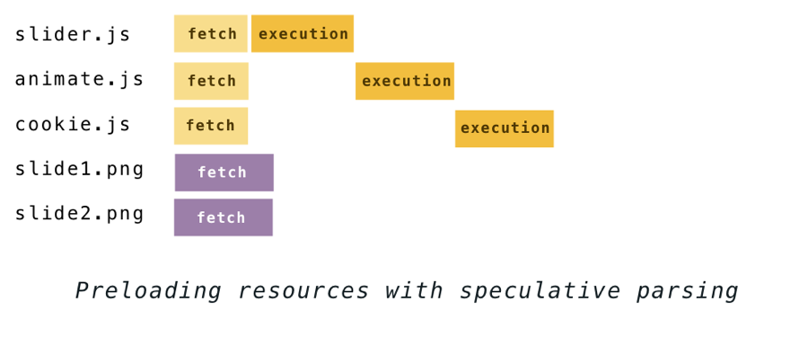
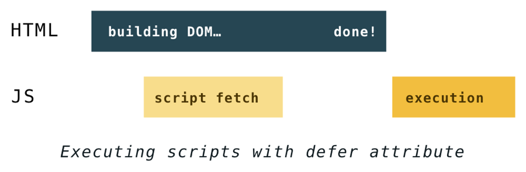
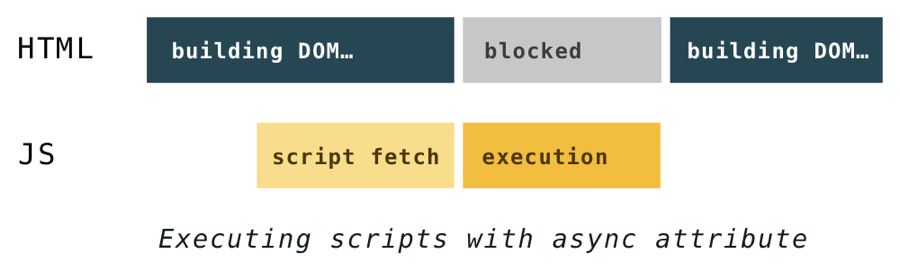

DOM中外部资源的解析与优化
DOM中外部资源的解析与优化
浏览器的渲染简介
首先下载html、js、css。接着浏览器首先会将html转换成一种他们能够理解的格式DOM，CSS 样式被映射到 CSSOM 上（css对象模型），这两者结合生成render tree。
解析过程中遇到js标签就会下载解析执行。
render tree结束之后进入layout阶段。
layout是指计算每个DOM元素最终在屏幕上显示的大小和位置。遍历顺序为从左至右，从上到下，由于web页面元素布局是相对的，所以任意元素的位置发生变化，都会引起其他元素位置的变化，这就是reflow。
渲染引擎会遍历渲染树，由用户界面后端层将每个节点绘制出来的过程称为paint。当元素改变时并且这种改变不会影响元素在页面当中的位置（比如 background-color, border-color, visibility），浏览器仅仅会应用新的样式重绘此元素，此过程称为repaint。
reflow 的成本比 repaint 的成本高得多的多。一个结点的 reflow 很有可能导致子结点，甚至父点以及同级结点的 reflow 。在一些高性能的电脑上也许还没什么，但是如果 reflow 发生在手机上，那么这个过程是延慢加载和耗电的。
DOM中外部资源的解析和优化
看到一篇很好的文章，Building the DOM faster: speculative parsing, async, defer and preload。下文是我对这篇文章在原文的基础上加入了自己一些的理解。
js脚本会阻塞HTML的解析，而css会阻塞js脚本的解析
在过去为了执行一个脚本，HTML的解析必须暂停。只有在JavaScript引擎执行完代码之后它才会重新开始解析。如果HTML的解析不暂停，脚本可以改变DOM结构，或者脚本可能会需要获取某个DOM节点，如果是在DOM还在构建时获取，可能会返回意外的结果。所以JS阻塞页面的原因是它可以修改DOM节点。
而css会阻塞js脚本的解析，因为js可能会需要样式信息。
因此总结一下：如果在文档中外部样式表放置在脚本之前，DOM 对象和 CSSOM 对象的构建可以互相干扰。 当解析器获取到一个 script 标签，DOM 将无法继续构建直到 JavaScript 执行完毕，而 JavaScript 在 CSS 下载完，解析完，并且 CSSOM 可以使用的时候，才能执行。

虽然css不阻塞DOM的构建，但它会阻塞DOM的渲染。直到DOM和CSSOM都准备好之前，浏览器什么都不会显示。
预解析
在以前当解析器遇到一个脚本就意味着如果是引入脚本，先要下载，然后再解析，如图所示。

脚本下载的时间也阻塞HTML的解析，这样非常耗时，那么有没有一种方法能够让脚本下载异步进行呢？
这种在同步的脚本执行的时候保持文件下载的方法在不同的浏览器有不同的名字，Chrome 和 Safari 称它为 “预扫描器” 而 Firefox 称它为预解析器。
它的概念是：虽然在执行脚本时构建 DOM 是不安全的，但是你仍然可以解析 HTML 来查看其它需要检索的资源。找到的文件会被添加到一个列表里并开始在后台并行地下载。当脚本执行完毕之后，这些文件很可能已经下载完成了。
所以上面那张图在有了预解析器后会变成这样：

以这种方法触发的下载请求称之为“预测”，因为很有可能脚本还是会改变HTML结构（还记得document.write吗？），导致了预测的浪费。虽然这是有可能的，但是却不常见，所以这就是为什么预解析仍然能够带来很大的性能提升。
可以预加载的东西在浏览器之间有所不同，所有的主要的浏览器都会预加载：脚本、外部CSS、来自img标签的图片。
在预解析HTML页面时，浏览器不会执行内联的JS代码块，这意味着它不会发现任何的脚本注入资源，也意味着，如果当我们需要一些不重要的资源晚一点被加载的时候，就可以使用JS来加载这些资源，从而避免预解析。
defer和async
虽然通过预解析可以减少加载资源的时间，但是脚本的解析会阻塞页面解析这依然是个问题。其实并不是所有的脚本都一样重要，对于那些不那么重要的脚本可以采用异步加载。defer和async属性就是提供给开发者一个方式来告诉浏览器哪些脚本需要异步加载。这两个属性都告诉浏览器，它可以一边加载脚本一边解析HTML，并在HTML解析完后再执行脚本，这样脚本的加载和执行就不会阻塞页面解析。
Defer和asycn之间的不同就是它们开始执行脚本的时机不同。
Defer会使js脚本的执行在HTML解析完全结束之后开始，在DOMContentLoaded 事件被触发之前执行。它保证脚本会按照它在HTML中出现的顺序执行，并且不会阻塞解析。（当初始的HTML文档被完全加载和解析完成之后，DOMContentLoaded 事件被触发，而无需等待样式表、图像和子框架的完成加载。）

而设置了async的脚本会在它们加载完后的第一时间执行。这意味着有可能（并且很有可能）设置了async的脚本不会按照它们在HTML中出现的顺序执行。这也意味着他们可能会中断DOM的构建。不过设置了async的脚本的加载有着较低的优先级。他们通常在所有其他脚本加载之后才加载，而不阻塞DOM构建。然而，如果一个指定async的脚本很快就完成了下载，那么它的执行会阻塞DOM构建以及所有在之后才完成下载的同步脚本。

async和defer属性只对外部脚本起作用，如果没有src属性它们会被忽略。
preload
作为作者，你知道哪些资源对你的页面渲染来说是最重要的。它们其中一些经常深藏在CSS或者是脚本当中，甚至浏览器需要花上很长一段时间才会发现他们。对于那些重要的资源，你现在可以使用<link rel="preload">来告诉浏览器你需要尽快地加载它们。
你只需要写上:<link rel="preload" href="very_important.js" as="script">，这样你几乎可以链接到任何东西上，并且as属性告诉浏览器要下载的是什么。一些可能的值是：style、script、image、font、audio、video